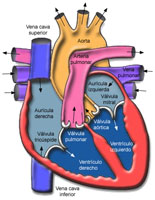
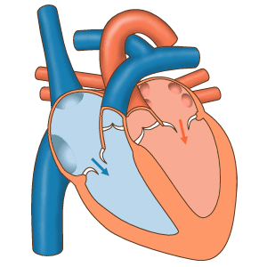

|
 Para
saber más Para
saber más |
La ley de Boyle-Mariotte tiene el nombre de su descubridores, el irlandés Robert Boyle y el francés Edme Mariotte. Ninguno de los dos se conocía, y aunque la publicación de los trabajos de Boyle fue anterior a la de Mariotte, se pudo comprobar que los trabajos de este son de las misma época en que Boyle publicó los suyos.
Está ley tiene múltiples aplicaciones. Una de ellas está en las bombas de agua. Existen dos bombas de agua, las impelentes y las aspirantes. Las primeras funcionan por reducción de volumen, y las segundas por aumento de volumen.
Nuestro cuerpo posee una bomba que es fundamental: el corazón, que se comporta como una bomba impelente/aspirante y permite el movimiento de la sangre por todo el cuerpo. El corazón se divide en cuatro cámaras: dos superiores, que son las aurículas y dos inferiores, que son los ventrículos. Cada par ventrículo/aurícula está separado por válvulas que se abren y se cierran. Los ventrículos están conectados respectivamente con las arterias aorta y pulmonar, separados por válvulas, como se puede ver en la imagen. |

Fuente: www.mariaspaces.bligoo.es |
El corazón no descansa nunca. Realiza dos movimientos: uno de contracción llamado sístole (para impulsar la sangre y lograr que ésta llegue a todos los rincones del cuerpo), y otro de dilatación llamado diástole (al relajarse vuelve a llenarse de sangre). Cuando se produce la sístole, se reduce el volumen, por lo que aumenta la presión que hace abrir las válvulas aórtica y pulmonar y la sangre es impulsada. Cuando se produce la diástole, al dilatarse el corazón aumenta el volumen, por lo que disminuye la presión, aspirando sangre. |

Fuente http://scquinto.blogspot.com |
Cuando una persona se toma la tensión, lo que hace es medir la presión de la sangre sobre los vasos sanguíneos. Esta medida presenta dos valores: la presión sistólica o alta y la diastólica o baja. Estos valores pueden indicar el estado de salud de una persona: una presión excesiva puede romper alguno de los vasos y una muy baja, no permitir que la sangre circule correctamente. |
|
|
|